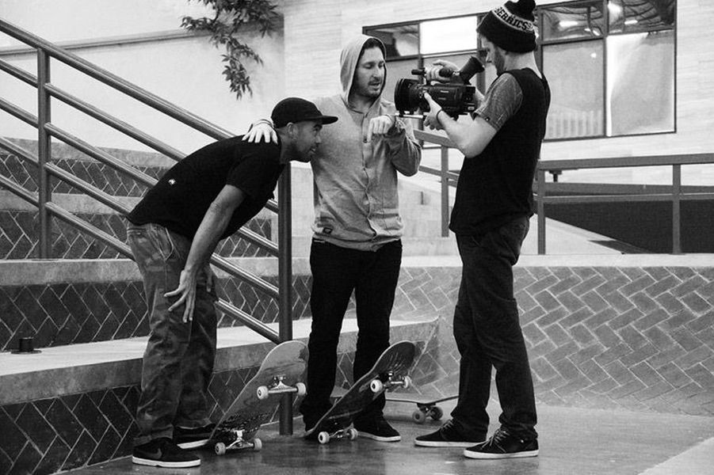
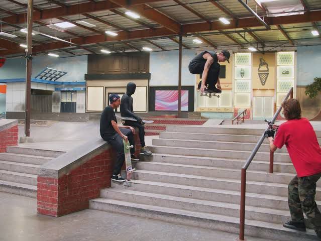
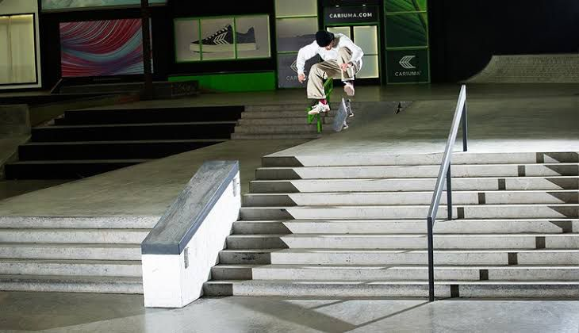
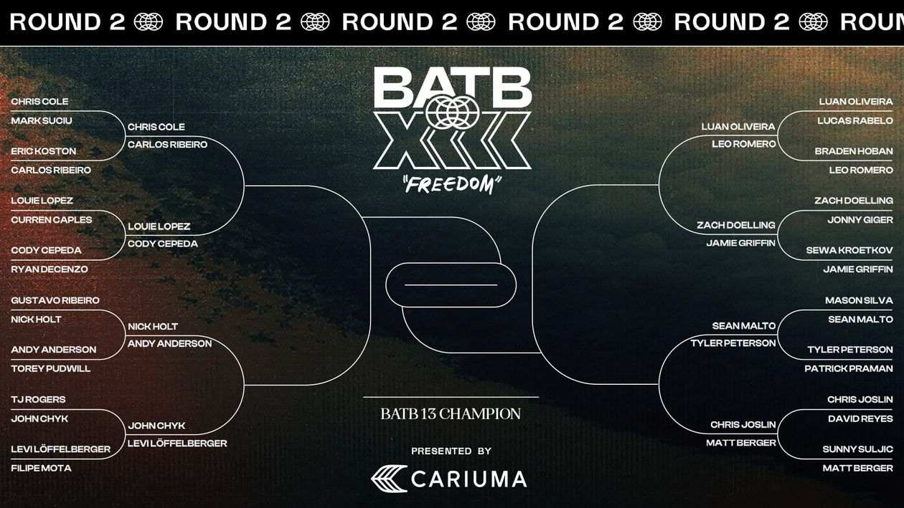
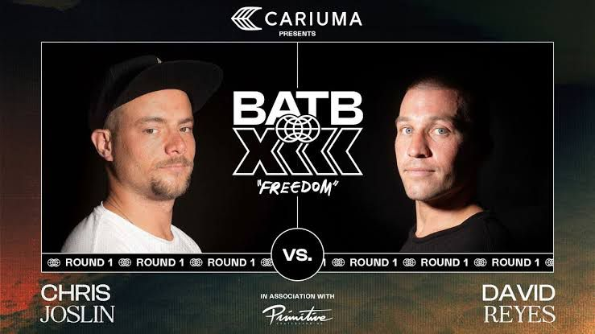

Berrics
The Berrics is a private indoor skatepark owned by professional skateboarders Steve Berra and Eric Koston. It is also a website providing content filmed in the skatepark, as well other skateboard-related media. The facility's name is a portmanteau of the owners' names (the "Ber" of Berra's surname and the "ric" of Koston's first name).
Things change. Boards change, shoes change, tricks change, skaters change. Change is the manifestation of time, and time has shown us that skateboarding is here for as long as we—as individuals and as a community—create it into existence. Although much of the world is trying to stunt skateboarding's growth, there are enough rogue individuals out there continuing to make it happen. Whether it be by building ledges at a remote spot just east of downtown LA like Jason Hernandez, constructing mini-ramps in our backyards like Mikey Taylor, or buying buildings and constructing skateparks inside them like ourselves, we continue to grow because our will to skate and our will to survive is just that strong and because the only alternative is to quit and die. But we at the Berrics believe that life was made to live out of, not die out of. There's nothing special about dying. Anyone can do that. Push the future. — Steve Berra & Eric Koston.
 The Berrics host events and contest and is most popular by a contest called BATTLE OF THE BERRICS.It has sessions which are battle of the berrics 1 till 12.In 2008, skateboard brand, DVS Shoe Company (now DVS Shoes), sponsored the inaugural Battle at the Berrics contest. Consisting of a professional game of S.K.A.T.E., the competition involved thirty-two skaters competing in a bracket-style tournament. The competitors included Steve Berra, Eric Koston, Rob Dyrdek, Andrew Reynolds, Mike Carroll, Marc Johnson, Erik Ellington, PJ Ladd, Danny Montoya, Chris Roberts, Donovan Strain, and Sean Malto.Battle at the Berrics 2, the second installment of Battle at the Berrics, allowed the Berrics' viewership to vote for thirty-two of more than 150 skateboarders, with the most popular invited to fill the tournament's 32 competitor slots; the two most popular selections were Chris Cole and Daewon Song.It also has WBATBA which is women battle at the berrics
 